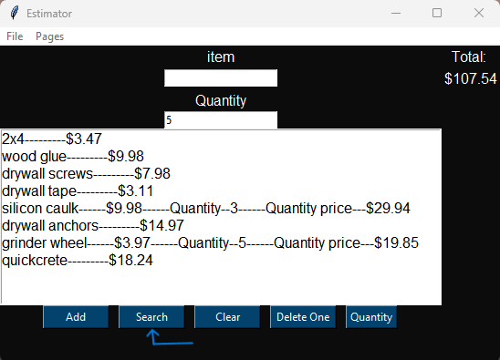
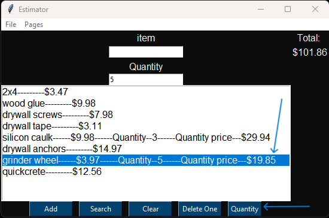

How to use IET
The first step is by simply typing out what item you need in the item bar. It can be general or specifically names. What ever you type in here will be search on the home depot website for you.
To add this item to the list simply press the enter key or the add button. Repeat this process till all items you want to search are found.
Once you`re ready to start searching click the search button. You might see the command prompt open and close a few times. No need to worry, this is just the tool grabbing the needed information from the website.
Once the search is done and you want to add multiple of one item to see the price, simply input the number of units for the item into the bar below the word quantity.
Once you`ve type the number of units needed, click and highlight the item you want to add multiple units too, and click the quantity button.
Once you`re ready to save the file, click on file, and then save. This will prompt you with a input to name the file. and click confirm to save so you can print the itemized sheet and give to your client.